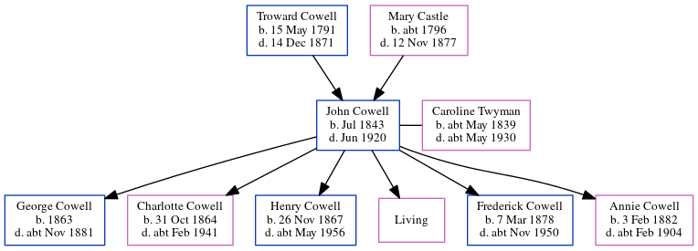

John Cowell 1843 - 1920
[ Home ] | [ Calendar ] | [ Surnames Index ] | [ Errors ] | [ Family History ]A labourer and the child of Troward Cowell (an agricultural labourer) and Mary Castle, John Cowell, the three times great-uncle of Nigel Horne, was born in Wingham, Kent, England in Jul 18431,2,3,4,5,6,7,8,9 and married Caroline Twyman (with whom he had 6 children: George William, Charlotte Priscilla Ann, Henry John, Emily Jane, Frederick Troward and Annie Mary, along with 1 surviving child) at St Andrews, Wickhambreaux, Kent, England on 30 Aug 186210.
During his life, he was living at Old Farm House in Wingham on 30 Mar 18511; at Wingham Street in Wingham on 7 Apr 18612; at London Road, Ditton, Kent on 2 Apr 187112; on Orchard Terrace, New Hythe Road, East Malling, Kent on 3 Apr 188111; on Lunsford Lane, East Malling, Kent on 5 Apr 189113; in East Malling, Kent, England in 19016; and at The Banks, Larkfield, Kent on 2 Apr 191114.
He died in Jun 1920 in Malling, Kent, England8.
Parents
- Troward was born on 15 May 1791
- Mary was born c. 1796
Children
- George William was born in 1863
- Charlotte Priscilla Ann was born on 31 Oct 1864
- Henry John was born on 26 Nov 1867
- Frederick Troward was born on 7 Mar 1878
- Annie Mary was born on 3 Feb 1882
Citations
- 1851 England Census Online publication - Provo, UT, USA: The Generations Network, Inc., 2005.Original data - Census Returns of England and Wales, 1851. Kew, Surrey, England: The National Archives of the UK (TNA): Public Record Office (PRO), 1851. Data imaged from the National
- 1861 England Census Online publication - Provo, UT, USA: The Generations Network, Inc., 2005.Original data - Census Returns of England and Wales, 1861. Kew, Surrey, England: The National Archives of the UK (TNA): Public Record Office (PRO), 1861. Data imaged from the National
- 1871 England Census Online publication - Provo, UT, USA: The Generations Network, Inc., 2004.Original data - Census Returns of England and Wales, 1871. Kew, Surrey, England: The National Archives of the UK (TNA): Public Record Office (PRO), 1871. Data imaged from the National
- 1881 England Census Online publication - Provo, UT, USA: The Generations Network, Inc., 2004. 1881 British Isles Census Index provided by The Church of Jesus Christ of Latter-day Saints © Copyright 1999 Intellectual Reserve, Inc. All rights reserved. All use is subject to the
- 1891 England Census Online publication - Provo, UT, USA: The Generations Network, Inc., 2005.Original data - Census Returns of England and Wales, 1891. Kew, Surrey, England: The National Archives of the UK (TNA): Public Record Office (PRO), 1891. Data imaged from The National
- 1901 England Census Online publication - Provo, UT, USA: The Generations Network, Inc., 2005.Original data - Census Returns of England and Wales, 1901. Kew, Surrey, England: The National Archives of the UK (TNA): Public Record Office (PRO), 1901. Data imaged from the National
- 1911 England Census Online publication - Provo, UT, USA: Ancestry.com Operations, Inc., 2011.Original data - Census Returns of England and Wales, 1911. Kew, Surrey, England: The National Archives of the UK (TNA), 1911. Data imaged from the National Archives, London, England.
- England & Wales, Death Index: 1984-2005 Online publication - Provo, UT, USA: The Generations Network, Inc., 2007.Original data - General Register Office. England and Wales Civil Registration Indexes. London, England: General Register Office. © Crown copyright. Published by permission of the Cont
- England & Wales, FreeBMD Birth Index, 1837-1915 Online publication - Provo, UT, USA: The Generations Network, Inc., 2006.Original data - General Register Office. England and Wales Civil Registration Indexes. London, England: General Register Office. © Crown copyright. Published by permission of the Cont
- KFHS CD22
- 1881 England, Wales & Scotland Census - Findmypast (was age 39 and the head of the household)
- 1871 England, Wales & Scotland Census - Findmypast (was age 30 and the head of the household)
- 1891 England, Wales & Scotland Census - Findmypast (was age 48 and the father of the head of the household)
- 1911 Census for England & Wales - Findmypast (was age 68 and the head of the household)
- 1851 England, Wales & Scotland Census - Findmypast (was age 8 and the son of the head of the household)
- 1861 England, Wales & Scotland Census - Findmypast (was age 13 and the son of the head of the household)
Media
England & Wales births 1837-2006 - BMD/B/1843/3/AH/000679/007
Canterbury Marriages - GBPRS/CANT/M/97033441/1
England & Wales marriages 1837-2008 - BMD/M/1862/3/AZ/000426/026
England & Wales deaths 1837-2007 - BMD/D/1920/2/AZ/000185/051
1881 England, Wales & Scotland Census - GBC/1881/0004492699
1891 England, Wales & Scotland Census - GBC/1891/0005472923
1911 Census for England & Wales - GBC/1911/RG14/03970/0103/1
Family Tree
Map
Generated by ged2site. Last updated on Jul 3, 2024